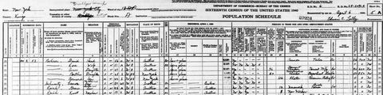
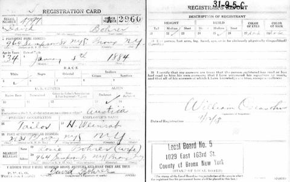

David Berg Bohrer
1884–1976
Life events
| Born | 5 Jan 1884 · Austria Map |
|---|---|
| Married | 14 Mar 1909 · Rose Schwarz · Stadttempel, 1010, Seitenstettengasse 4, Vienna, Austria Map |
| Departure | 11 Feb 1911 · Hamburg, Hamburg, Germany Map |
| Arrival | 27 Feb 1911 · Manhattan, New York Map |
| Lived | 1917 · Bronx, New York Map |
| Lived | 1920 · Bronx, New York Map |
| Lived | 1 Jun 1925 · Brooklyn, New York Map · Relation to Head: Husband |
| Lived | 1930 · Brooklyn, New York Map |
| Lived | 1935 · Manhattan, New York Map |
| Lived | 1940 · Manhattan, New York Map · Married |
| Lived | 1942 · Brooklyn, New York Map |
| Lived | 1950 · New York Map · Relation to Head: Head; Marital Status: Married |
| Died | Jun 1976 · Brooklyn, New York Map |
Family
David Berg Bohrer1884–1976
Rose Schwarzb. 1888
Photos
Rose Schwarz
David Berg Bohrer
David Berg Bohrer
David Berg Bohrer

David Berg Bohrer
Rose Schwarz
David Berg Bohrer
Rose Schwarz
David Berg Bohrer
Leonore Lotti Fuchs
Margarethe Schwarz
Rose Schwarz
David Berg Bohrer
David Berg Bohrer
David Berg Bohrer